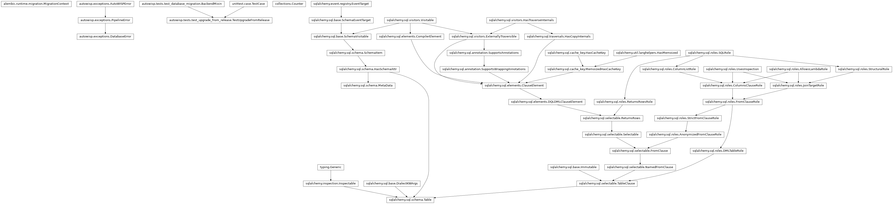
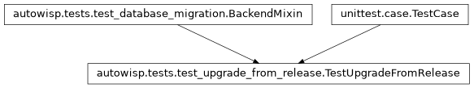

autowisp.tests.test_upgrade_from_release module
Class Inheritance Diagram

Tests that projects created by released versions upgrade to today’s.
Unlike the rest of the migration tests, these start from what a release itself creates, exported from its tag and run in a subprocess, so they need the repository’s history and are skipped outside a checkout.
- class autowisp.tests.test_upgrade_from_release.TestUpgradeFromRelease(methodName='runTest')[source]
Bases:
BackendMixin,TestCase
A project created by a released AutoWISP becomes one of today’s.
In its schema, and in the rows creating a project fills it with: the steps, their parameters, the layout of its products.
This is the test that catches a model, or what a new project is given, changed without a revision to match. The other migration tests build their “before” state from today’s metadata, so a missing revision moves both sides together and goes unnoticed. Here the starting point is built by the released code itself, checked out from its tag, so the revision chain is the only thing that can close the gap.
That released package is loaded in a subprocess: it defines the same module names as the code under test, so importing both into one interpreter would have whichever came first shadow the other.
- _assert_holds(engine, expected, *, own_values=(), reason)[source]
Check that a project holds exactly the given contents.
- _build_release_schema(source, engine)[source]
Create the release’s schema, running that release’s own code.
- _initialize_project(source, label, *, released=True)[source]
Create a project and fill it, running the code found in source.
Filled the way creating a project fills it: the steps, their parameters and default configuration, the processing sequence, the master types, the layout of the HDF5 products, the diagnostic types and the expression library.
- Parameters:
source (str) – The directory holding the
autowisppackage to create the project with.label (str) – Tells the project apart from the others a test creates.
released (bool) – Is source a release rather than the code under test? A release that cannot create its project on this backend leaves nothing to check; the code under test must.
- Returns:
The SQLAlchemy engine for the project’s database.
- static _run_alembic(engine, command, revision)[source]
Run one Alembic command on a project, as
migrate_projectwould.migrate_projectonly ever goes to the head, so stopping at an earlier revision, downgrading or re-stamping go through here.- Parameters:
engine – The SQLAlchemy engine for the project database.
command (callable) – The function of
alembic.commandto run, e.g.alembic.command.downgrade.revision (str) – The revision to run it to.
- last_schema_revision = '0011_diagnostic_expression'
The revision the ones that change a project’s rows come after.
- release_baselines = ('1.8.1', '2.0.0')
Released versions a project database may be upgraded from.
Add each new release tag as it ships; every entry gets its own upgrade-to-current check.
- stored_values_kept = ('tfa-observation-id', 'stamp-pixel-outlier-threshold', 'stamp-smoothing-outlier-threshold', 'master-photref-fname-format', 'magfit-stat-fname-format')
Parameters whose default has changed since one of the releases.
An upgraded project keeps the value it stores, so it is the one thing such a project may hold that a new one does not. Each entry is a decision that the stored value is to be kept rather than migrated: a default changed without one fails the comparison with a new project.
- test_a_value_too_long_to_keep_stops_the_migration()[source]
Narrowing a column refuses rather than truncating.
Refusing is the point: on a server not running in strict mode the ALTER would truncate the value silently.
Uses
condition_expression.expression(1000 -> 768 in0005) rather thanimage.raw_fname, which narrows identically in0004. The guard lives in the sharedresize_varchar_column, so either exercises it – but condition_expression has no foreign keys, whereas an image row needs an image_type and an observing session, and that in turn needs an observer, camera, telescope, mount, observatory and target. A server enforces every one of those, so the alternative was either a dozen rows of fixture or switching the checks off, and neither has anything to do with column widths.
- test_every_release_ends_up_holding_what_a_new_project_does()[source]
Each released project, once migrated, holds a new one’s rows.
The schema reaching today’s is not enough: creating a project also fills it with the steps, their parameters, the processing sequence and the layout of its products, all of which change between releases. A project created by a release must end up with the same rows as one created today, whichever table they are in, except for the values it stores for
stored_values_kept, which must be exactly the ones it had.The revisions that change rows are then put through what else can happen to them, on the same project, since creating one is what takes the time:
run a second time, as after an upgrade interrupted before it was recorded, they add nothing;
downgraded, they leave what the project held before them, even of an exclusion rule a user has since set under a condition, which goes with the parameter it was a value of.
- test_every_release_keeps_its_timestamp_triggers()[source]
Upgrading does not cost the database its triggers.
SQLite cannot alter a column in place, so
batch_alter_tablerebuilds the table and the drop takes its triggers with it. The rebuilt table is created by the revision rather than from the models, so nothing puts them back – a 1.8.1 database used to lose seven this way, and the check above could not see it.
- autowisp.tests.test_upgrade_from_release._git(*args, binary=False)[source]
Run git at the repository root; return output, or None if it fails.
The root, not this file’s directory:
git archiverefuses a pathspec reaching outside the current directory, so it has to be invoked from the top level.
- autowisp.tests.test_upgrade_from_release._repo_root()[source]
Return the repository’s top level, or None outside a checkout.
- autowisp.tests.test_upgrade_from_release.get_project_contents(engine, own_values=())[source]
Return every row of a project database, comparable between projects.
Two projects holding the same definitions number their rows differently: a project that has been migrated keeps the ids it was created with, and the revisions append what a new project creates in place. So each row is given without its own id and timestamp, and each foreign key is replaced by the row it points to, which makes “this step depends on that one” read the same whatever the two are numbered.
Every table the database has is included, so one added later is covered without being listed here.
- Parameters:
engine – The SQLAlchemy engine for the project database.
own_values ([str]) – The names of the parameters whose configured value belongs to the project, and so is not to be compared. It is replaced by a placeholder.
- Returns:
The rows of each table by its name, each a tuple of (column, value) pairs. Sorted, except those of
processing_sequence, which stay in the order of their ids: that order is what the table records.- Return type: